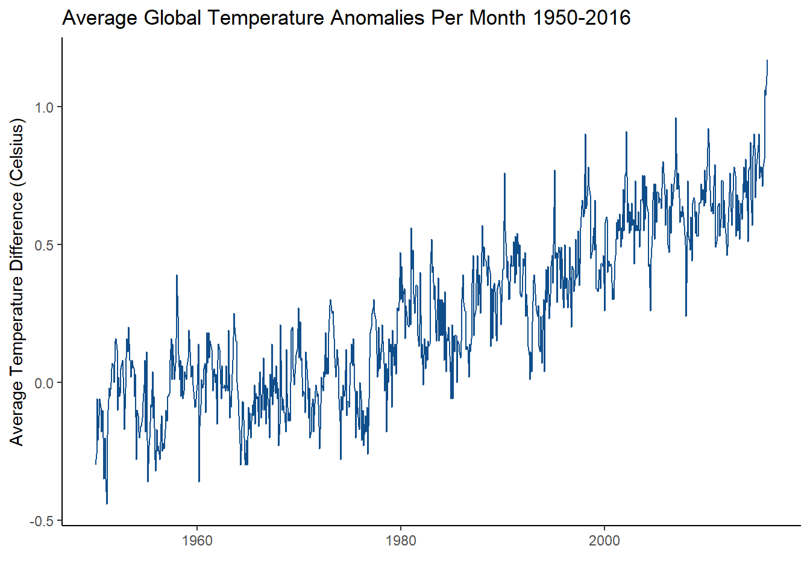
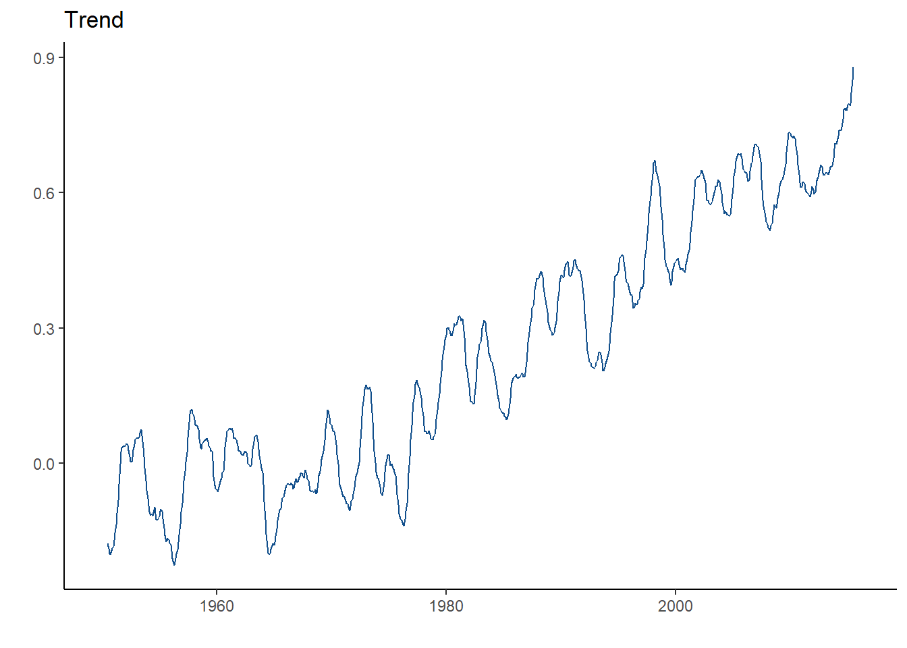
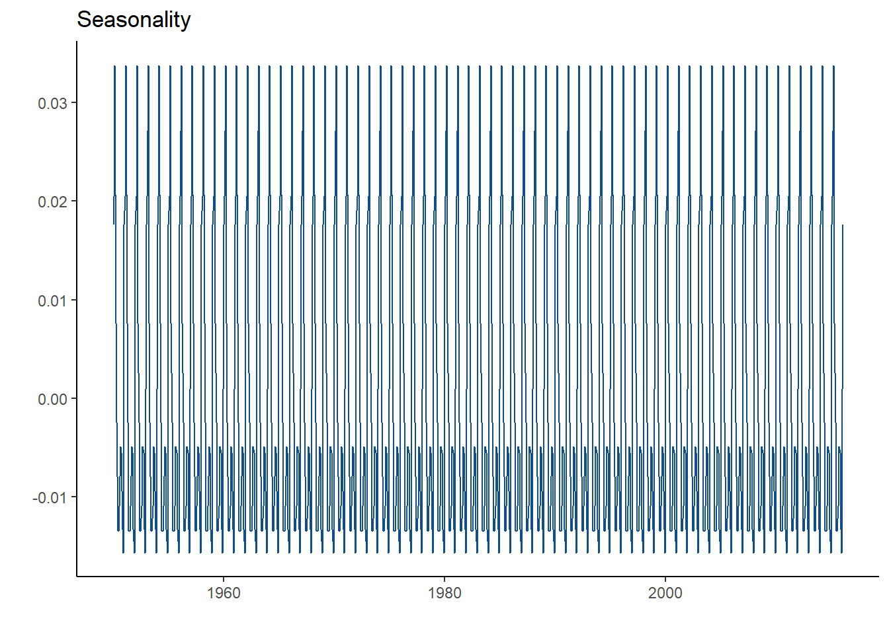
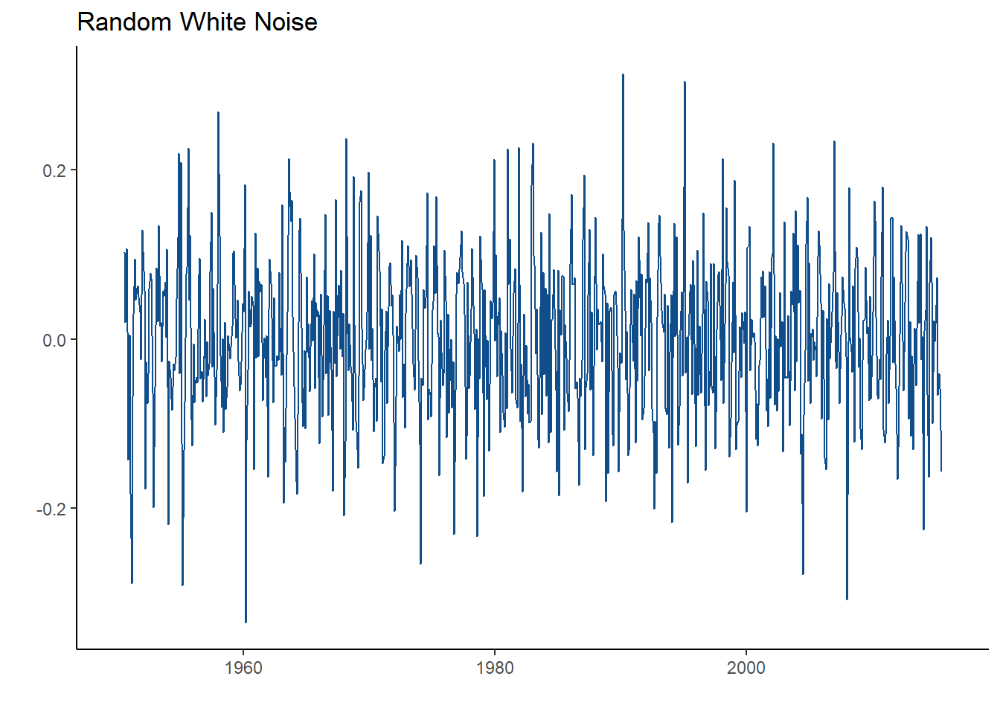
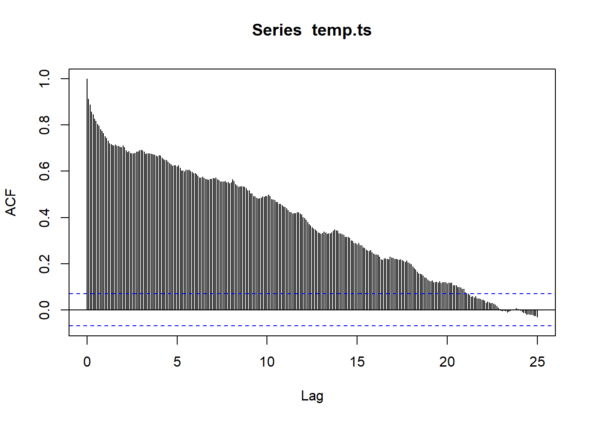

Chapter 2 Introduction to Time Series
2.1 What is a Time Series?
A time series is a series of data points over time. Sounds pretty simple, right?
Let’s take a look at an example of time series using real world data. This data set looks at the average global temperature anomalies in celsius per month from January 1950 to December 2016.
Let’s see what what this data looks like.
## Mean
## 1 -0.30
## 2 -0.26
## 3 -0.06
## 4 -0.21
## 5 -0.12We must convert the data into a time series object. Now we know that this data is monthly and that it started in January 1950 and ended in December 2016. So we must convert it to a time series object, using the ts() function in R. It takes in these arguments.
- start = the starting time of the time series
- end = the ending time of the time series
- freqeuncy = the number of observations per unit of time.
- For monthly data, frequency will be 12
- For quarterly data, frequency will be 4
- For biannual data, frequency will be 2
## Jan Feb Mar Apr May Jun Jul Aug Sep Oct Nov Dec
## 1950 -0.30 -0.26 -0.06 -0.21 -0.12 -0.06 -0.09 -0.18 -0.10 -0.20 -0.35 -0.20
## 1951 -0.35 -0.44 -0.19 -0.10 -0.02 -0.05 0.00 0.05 0.07 0.06 0.00 0.15
## 1952 0.16 0.12 -0.10 0.02 -0.05 -0.04 0.05 0.07 0.08 -0.04 -0.17 -0.02As we can see, the data is now a time series object with filled with 1644 observations where each observation represents a month from 1950 to 2016.
How would this object look plotted?
There are several ways to plot time series in R, including the base R function plot(); however, we will be using the autoplot() function which is bulit into ggplot2
autoplot(temp.ts, ts.colour = "dodgerblue4") +
ggtitle("Average Global Temperature Anomalies Per Month 1950-2016") +
ylab("Average Temperature Difference (Celsius)") +
theme_classic()## Warning: Ignoring unknown parameters: ts.colour
What can we take away from this plot?
Well, the first thing you might notice is that the average global temperatue has risen rapidly since about 1970! It also gradually increased from 1950 to 1970. It also staggers a lot all the way through. One might conclude that temperature has increased in the past 66 years! How can you define the changed happening in this time series though? What does the rapid staggering mean? What do you call the upward movement?
2.2 Components of Time Series
What makes up time series?
Without going unto too much notation, a simple additive decomposed model will look like this:
\[x_{t} = m_{t} + s_{t} + e_{t}\]
where:
- \(m_t\) is the trend
- \(s_t\) is the seasonality
- \(e_t\) is the error or random white noise
To put it simply, the components of a time series model are defined as:
- trend - the increasing or decreasing values in a series
- seasonality - the repeating short-term cycles in the series
- random white noise - random variation in the series
To visualize these in R, you can easily use the base R function, decompose(), to produce plots for all three of these components. However, I chose to create my own plots using ggplot2.
Trend
What does the trend plot look like for this global temperature time series?

As we can see, there is strong upward trend. This means that the temperature is gradually going up since 1950! What if the trend line was going down? Then you would conclude that the temperature is decreasing. What if it stayed constant? Then, you can conclude that there is no trend!
Seasonality
What does the seasonality plot look like for this global temperature time series?

In a seasonality plot, you are looking for a common short-term pattern. Seasonality can be caused by many thing depending in the dataset. It is hard to tell if there is seasonality in this time series because of the rapid staggering. Usually seasonality will be more obvious. An example of seasonality is airline flyers. Many people are often flying in the summer and in the winter for vacation. Thus, that specific time series will see high spikes every 6 months.
Random White Noise
What does the random white noise plot look like for this global temperature time series?

Looks pretty random right? That’s because it is! This plot illustrates the variation in the time series. This is the unexplained variation that solely happens by chance.
2.3 Stationarity
Stationarity is one of the most important characteristics of a time series. What does it mean for a time series to be stationarity? It is defined by having a constant mean and variance across the time series. A time series needs to be stationary in order for it to make good prediction. We can check if a time series is stationary by looking at the autocorrelation function (ACF). What exactly is autocorrelation? Autocorrelation basically measures the similarity between observations as a function of the time lag between them.
Let’s take a look at the ACF plot of the global temperature time series, using the acf function in R.

What does this mean?
If the series was stationary, we would see basically very line within the blue confidence intervals. However, we see that every spike is out of these lines. This slow decay represents means that there is a trend in the time series, but there is no seasonality!
Here are some common ACF plots you may see:
- Trend and seasonality - Takes a long time decay but also looks similar to a sin graph.
- Trend, but no seasonality - Decays very slowly and the spikes are out of the blue confdience intervals.
- Seasonality, but no trend - Decays quickly and looks similar to a sin graph
- Stationarity - all lines within the blue confidence intervals, besides the first spike.
If a time series has trend or seasonality, then it is not stationary. This means that it won’t be good for forecasting. What can we do to fix this? We can create new models to represent the time series and make it stationary. We will go over this in the next chapter.